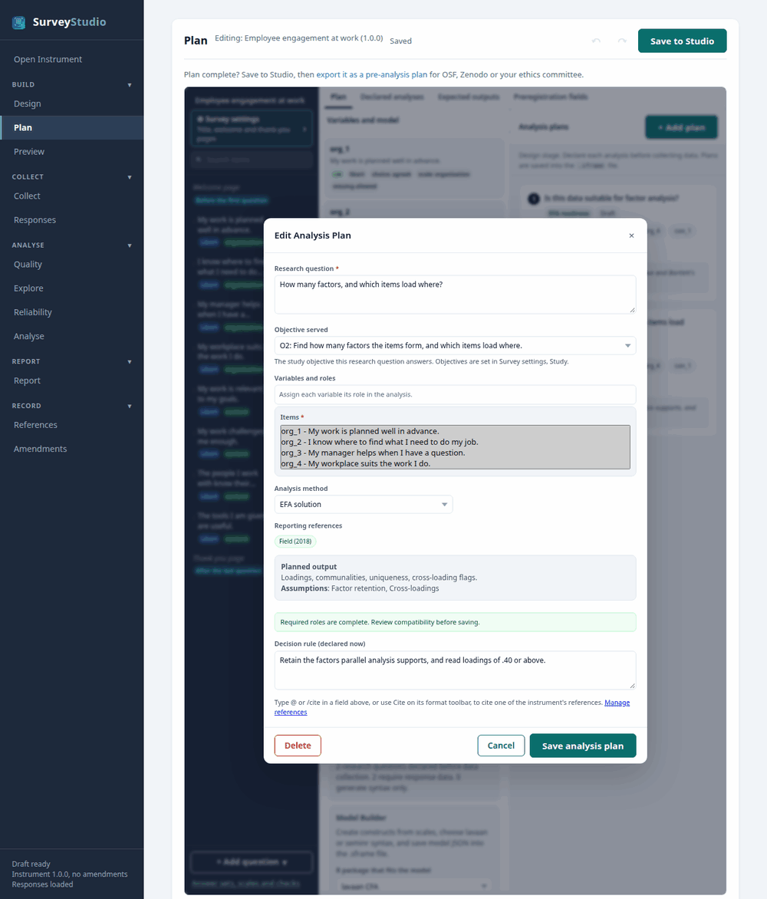
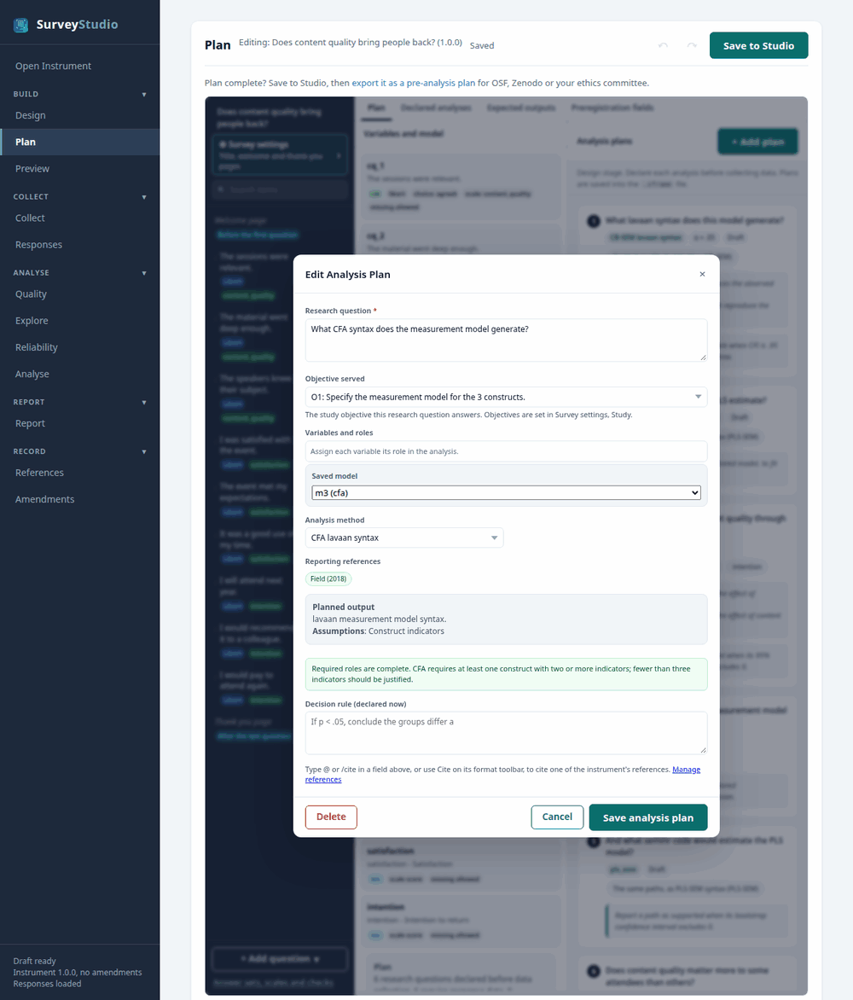
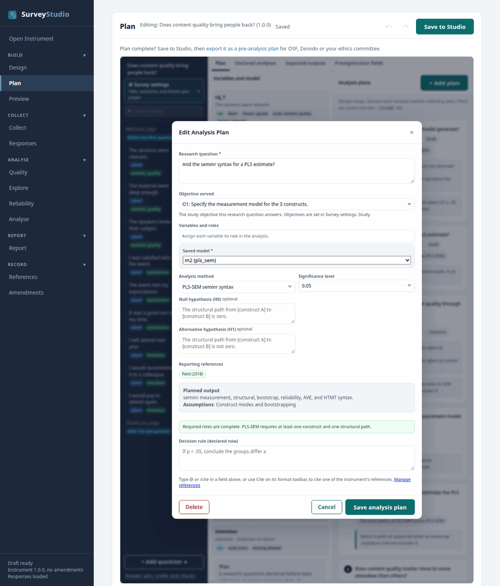
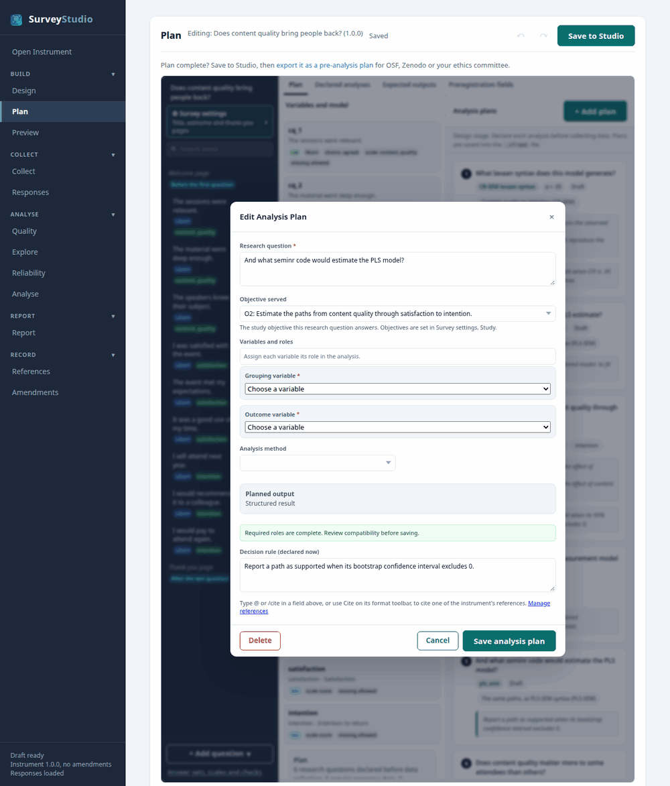
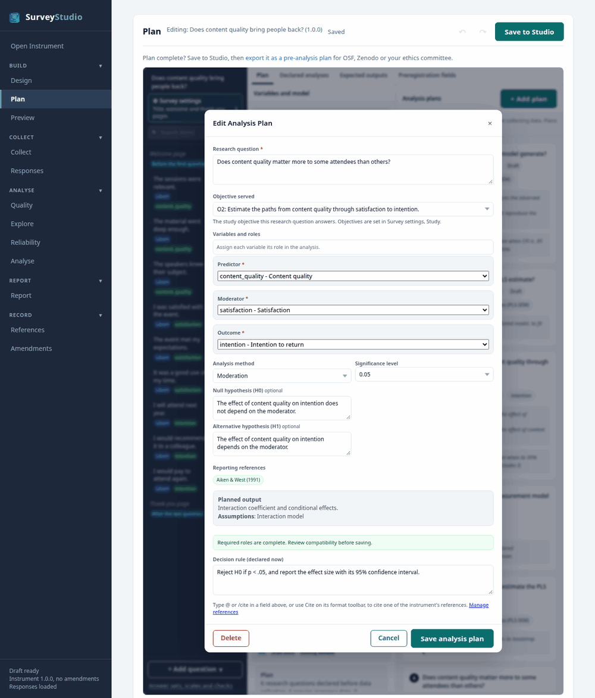

Check structure and write model syntax
Source:vignettes/articles/docs/methods/factor-models.Rmd
factor-models.RmdThese methods check whether items measure the factors assumed, write the lavaan or seminr syntax for a declared model, and estimate mediation and moderation.
Assumptions. Enough respondents for the number of items, and items that correlate. surveyframe writes the CFA, SEM and PLS-SEM syntax, and you fit it in lavaan or seminr. It estimates factor analysis, mediation and moderation itself.
In SurveyStudio, open Plan on the Design screen, add a research question and choose the method. For factor analysis, set the items. For model syntax, choose the saved model. For mediation and moderation, set the predictor, the mediator or moderator, and the outcome. Declare the hypotheses and the decision rule before collecting responses.
Factorability checks (KMO and Bartlett’s test)
factor_structure
demo.In the pre-analysis plan:
RQ1. Is this data suitable for factor analysis? Planned decision rule: Proceed when KMO is .60 or above and Bartlett’s test has p < .05.
In the report: the APA 7 sentence and a table, with a chart where the method has one, each titled with the research question.
Exploratory factor analysis

factor_structure demo.In the pre-analysis plan:
RQ2. How many factors, and which items load where? Planned decision rule: Retain the factors parallel analysis supports, and read loadings of .40 or above.
In the report: the APA 7 sentence and a table, with a chart where the method has one, each titled with the research question.
Confirmatory factor analysis (lavaan syntax)

sem_pls demo.In the pre-analysis plan:
RQ4. What CFA syntax does the measurement model generate?
In the report: the model syntax, ready for you to fit in lavaan or seminr.
Structural equation model (lavaan syntax)
sem_pls demo.In the pre-analysis plan:
RQ1. What lavaan syntax does this model generate? Null hypothesis (H0): The declared model reproduces the observed covariances. Alternative hypothesis (H1): The declared model does not reproduce the observed covariances. Planned decision rule: Judge the model’s fit as acceptable when CFI is .95 or above and RMSEA is .06 or below.
In the report: the model syntax, ready for you to fit in lavaan or seminr.
PLS structural equation model (seminr syntax)

sem_pls demo.In the pre-analysis plan:
RQ2. And the seminr syntax for a PLS estimate?
In the report: the model syntax, ready for you to fit in lavaan or seminr.
PLS structural equation model syntax

sem_pls demo.In the pre-analysis plan:
RQ5. And what seminr code would estimate the PLS model? Planned decision rule: Report a path as supported when its bootstrap confidence interval excludes 0.
In the report: the model syntax, ready for you to fit in lavaan or seminr.
Mediation analysis
sem_pls demo.In the pre-analysis plan:
RQ3. Does satisfaction carry content quality through to intention? Null hypothesis (H0): Satisfaction does not carry the effect of content quality to intention. Alternative hypothesis (H1): Satisfaction carries part of the effect of content quality to intention. Planned decision rule: Treat the indirect effect as present when its 95% bootstrap confidence interval excludes 0.
In the report: the APA 7 sentence and a table, with a chart where the method has one, each titled with the research question.
References: MacKinnon, D. P. (2008). Introduction to statistical mediation analysis. Lawrence Erlbaum.
Moderation analysis

sem_pls demo.In the pre-analysis plan:
RQ6. Does content quality matter more to some attendees than others? Null hypothesis (H0): The effect of content quality on intention does not depend on the moderator. Alternative hypothesis (H1): The effect of content quality on intention depends on the moderator. Planned decision rule: Reject H0 if p < .05, and report the effect size with its 95% confidence interval.
In the report: the APA 7 sentence and a table, with a chart where the method has one, each titled with the research question.
References: Aiken, L. S., & West, S. G. (1991). Multiple regression: Testing and interpreting interactions. SAGE.